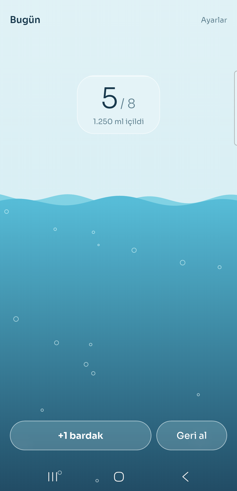
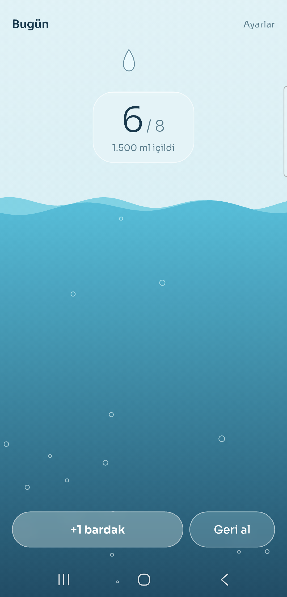
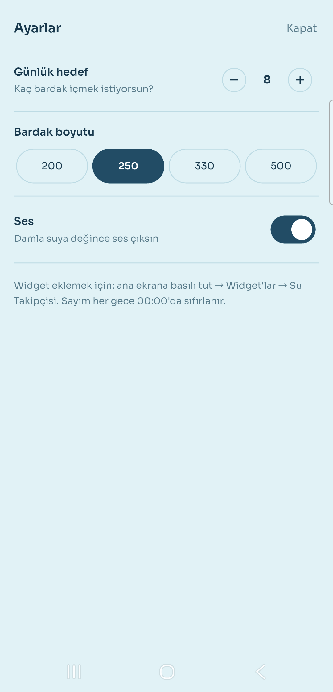
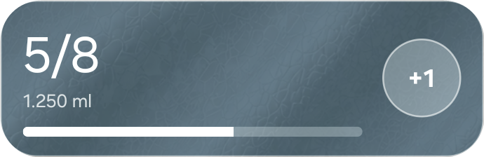

Ekranın kendisi bir bardak: su içtikçe su yükseliyor. Ama asıl iş ana ekranda oluyor — widget'taki "+1"e basınca uygulama hiç açılmadan bir bardak ekleniyor.
01 — Ne yaptım
"+1 bardak"a basınca yukarıdan bir damla düşüyor; suya değdiği anda sıçrıyor ve ses çıkarıyor. Telefonu eğince su da eğiliyor. Suya dokununca oradan halkalar yayılıyor. Sayı her gece sıfırlanıyor.
Ana ekrandaki widget aynı sayıyı gösteriyor ve kendi başına sayabiliyor. Çoğu zaman uygulamayı hiç açmıyorsun — amaç da buydu.



02 — Neyi bilerek yapmadım
Uygulamanın tek işi bugünü saymak. Dünü göstermeye başladığım an veritabanı, grafik ve onların boş durum ekranları da gelecekti. Canlı dalga ise hiç seçenek değildi: Android widget'ı canlı çizim yapamıyor, yalnız hazır parçaları — yazı, çubuk, düğme — gösterebiliyor. Bu yüzden dalga uygulamada, widget'ta sade bir doluluk çubuğu var.
03 — Bu hafta gösterdiğim teknik yetenek
Seride ilk kez Kotlin yazdım ve ilk kez uygulamanın kendi dışında bir yüzeyi var. Widget Jetpack Glance ile yazıldı: Android'in widget'ları Compose tarzında, eski XML yöntemine göre çok daha az kodla yazmayı sağlayan kütüphanesi.
Flutter ile widget aynı ayar dosyasını aynı anahtarlarla, aynı türlerle okuyup yazıyor. En önemli kural — "kayıtlı tarih bugün değilse sayı sıfır" — iki tarafta da var ve ikisi de aynı tarih biçimine göre yazıldı.

Yanında dört ilk daha: kendi platform kanalım (Flutter, Kotlin'e "ses çal" diyor), dokunduğun yerde suyu büken bir GPU shader'ı, ivmeölçerle eğilen su ve indirmek yerine matematikle ürettiğim damla sesleri.
04 — Aldığım karar
İlk sürüm Dart'ta sayıyordu. Widget'a dokununca home_widget paketi arka
planda bir Flutter motoru başlatıp Dart kodumu çalıştırıyordu. Tek dil, tek mantık —
kâğıt üstünde doğru görünüyordu.
Telefonda "+1" ara ara kayboldu.
Paketin arka plan işini satır satır okudum. Motoru başlatıyor ve Dart'ın bitmesini beklemeden "tamamlandı" diyordu. Motorun açılması bir ile üç saniye sürüyor; Android bu arada işlemi kapatırsa dokunuş sessizce kayboluyordu. Yalnız zorla durdurulmuş bir uygulamada, yoğun bir telefonda ortaya çıktı.
Şimdi dokunuş doğrudan Kotlin'de işleniyor: bir artır, diske yaz, widget'ı yeniden çiz. Motor yok; sayı anında değişiyor, kaybolmuyor. Art arda hızlı dokunuşlar sıraya alınıyor, ikisi birbirinin üstüne yazamıyor. Hoşuma giden bir yan etkisi de oldu: eski yolun gerektirdiği korumasız, dışa açık alıcı kalktı — artık başka bir uygulama "+1" gönderemiyor.
Bedeli, gece yarısı sıfırlama kuralının iki dilde durması. Bunu iki tarafta aynı anahtarlar ve tek bir tarih biçimiyle, README'deki bir tabloyla yönetiyorum.
05 — Nasıl doğruladım
Testler yalnız saf mantıkta: gece yarısı sıfırlama, geri almanın alt sınırı, hedef ve bardak kuralları, su fiziği (her damlada tek halka ve sekiz sıçrama parçası; 60 ve 120 Hz'de aynı sonuç), eğim hesabı ve dokunuşun nerede halka açabildiği.
Kotlin widget'ı, shader ve ses cihaza bağlı; onları gerçek telefonda denedim: zorla durdurulmuş uygulamada art arda beş dokunuş, sıfırlamayı görmek için ertesi güne alınan tarih, eğimin yönü.
Widget'taki "+1" debug'da çalıştı, release'de hiçbir şey yapmadı. Telefonun kaydı nedenini söyledi:
GlanceAppWidget: BroadcastReceiver execution failed java.lang.NoSuchMethodException: ArtiBirEylemi.<init> []
Glance eylem sınıfını çalışma anında adından bulup boş kurucusuyla oluşturuyor.
Release derlemesinin kod küçültücüsü R8 bu kullanımı göremedi ve kurucuyu sildi. Tek
bir -keep kuralı çözdü. Part 04'te aynı dersi ML Kit ile almıştım; bu
sefer önce kayda baktım.
06 — Ne öğrendim
Bir paketin arka plan özelliğine güvenmeden önce sorulacak soru bu. Paket çalışıyordu; "çalışıyor" ile "her seferinde çalışıyor" arasındaki fark ancak zorla durdurulmuş bir uygulamada göründü.
Birleşmiş manifest dört izin getirdi, hepsi WorkManager'dan. Üçünü kaldırdım.
WAKE_LOCK'u da kaldırmak istedim ama kaldıramadım: Glance widget'ı bir
WorkManager işiyle çiziyor ve o iş bu kilidi alıyor. Release derlemesinde tek izin
var ve nedenini söyleyebiliyorum.
Damlanın "bloop"u, perdesi hızla yükselen kısa bir sinüs ve üstel bir sönüm. Küçük bir betikten altı aday çıktı, birini seçtim. Public bir depoda lisans derdi yok ve betik aynı dosyayı bire bir yeniden üretiyor.
İncele